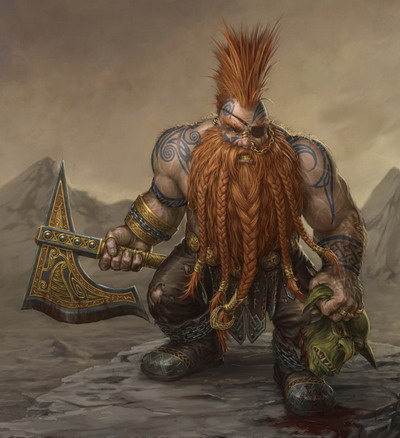

Regnar Firemead

I will hunt my enemies to the ends of the earth. I will find Doomklaw the Bloodsire. I will make him pay for the atrocities he did to my people. I will reclaim the Godforge of Konkoon, and I will use it to restore the Halls of Starlight.
Battles
- The Siege of Starlight Tops. bte 499
- Northern Butte, Starlight Tops
- The Battle of Orym's Creek. bte 481
- Western Province of Zalantia
- The Sinking of the Zephyr Prince. bte 482
Apprenticeships
- Master Zoryu
- Grogruk
- Famed Berserker of the Godkiller Tribe
- Lightwing
- Avatar of Illya, Lightwarden
Specialties
- Double-bladed Axe
- Blooddance
- Berserker Stance
- Fury of the Gods
Downtime Pleasures
Sellsword Offerings